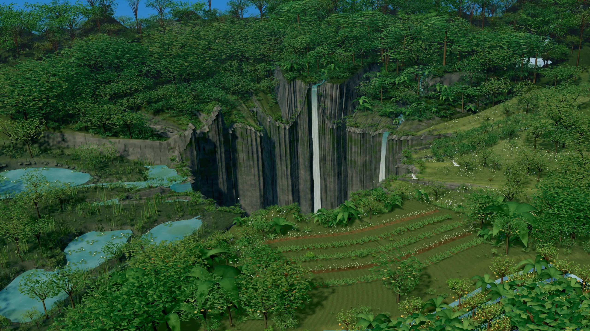
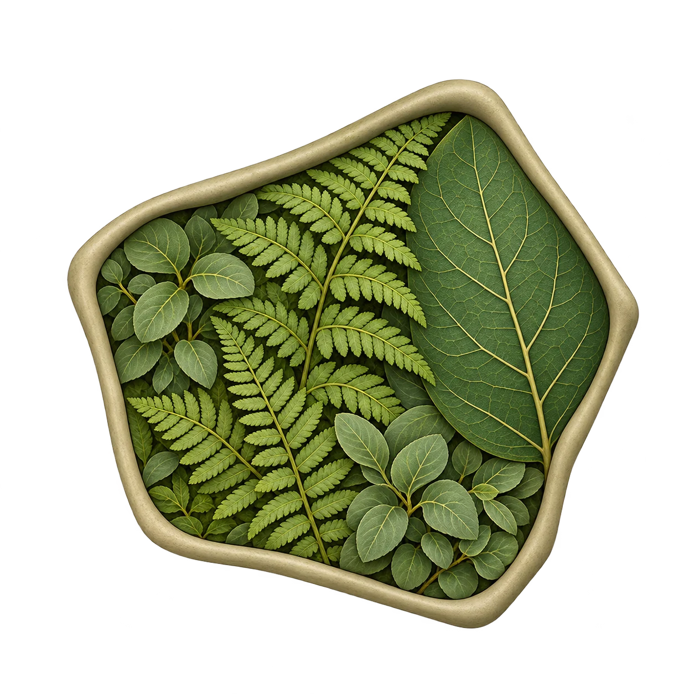
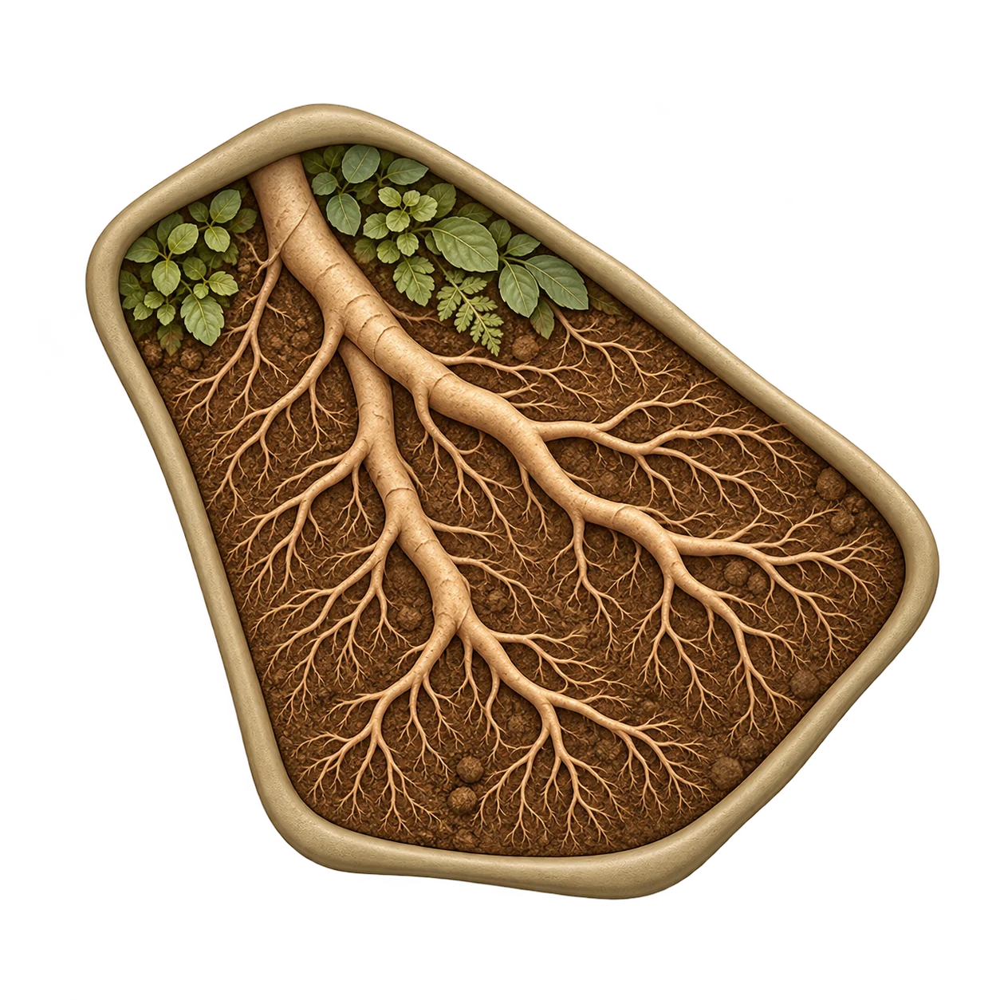
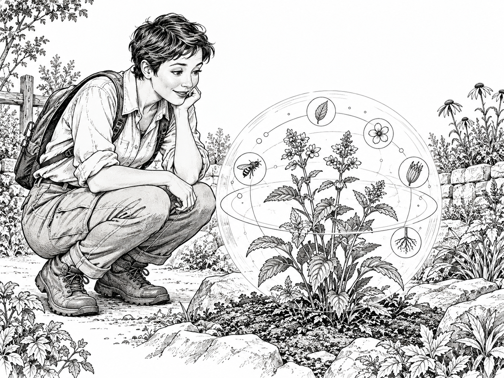
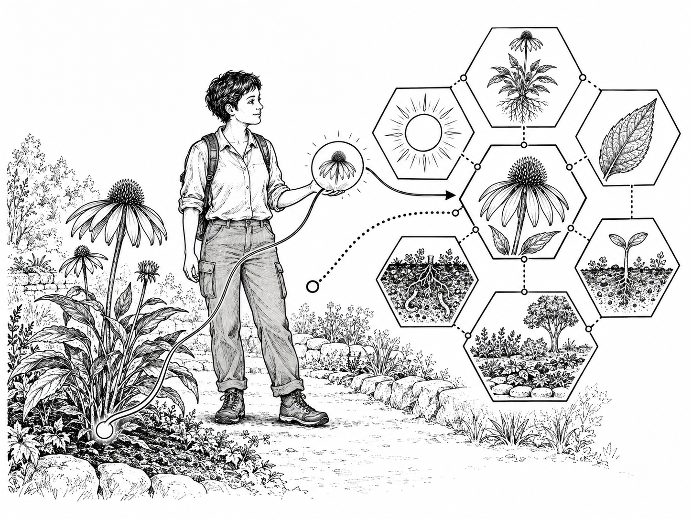

01 / Natural farming
Observe before
you act.
Masanobu Fukuoka’s work invites growers to question unnecessary intervention and learn by watching the land.
Masanobu Fukuoka


Nourishland / Start here
Why
Plants have different growing needs, layers and relationships. Useful knowledge can be difficult to find and connect.

What
Interactive guides connect plant information to the plants and places around you.

How
Explore growing conditions, propagation, harvest and ecological relationships through images and activities, on screen or in AR.
Try the demoDevelopment preview. Guides and the first pilot walk are being developed.
Education / Food Forests
A food forest combines trees, shrubs and smaller plants in a layered growing system.
Start with the story, then explore the plants, layers and relationships.
Our approach
Each plant has growing needs, behaviours and relationships. Nourishland connects that knowledge to a living place, making it easier to explore and use.
Food forests show how these connections work across layers, seasons and different design choices.
See the Hillyards prototypeA new way to grow
A food forest starts with a particular place: its climate, soil, water and people. Understanding begins by paying attention to what is already there.
01 / Natural farming
Masanobu Fukuoka’s work invites growers to question unnecessary intervention and learn by watching the land.
Masanobu Fukuoka
02 / Permaculture
Bill Mollison’s permaculture considers how plants, water, soil and people connect, and how each part can support others.
Bill Mollison

03 / Terrain and microclimates
Sepp Holzer draws attention to terrain, water and microclimates. Site conditions become starting points for observation and experimentation.
Sepp Holzer

04 / Learning on the land
Geoff Lawton’s teaching connects ecological design with practical projects, where learners can observe results and changes across seasons.
Geoff Lawton

05 / Syntropic agroforestry
Ernst Götsch’s approach uses succession, pruning and biomass to guide growing systems as plants establish and conditions change.
Ernst Götsch

Growing needs, layers, propagation, harvest and wildlife relationships can be difficult to connect. Nourishland brings that information into interactive guides, linked to the plants and places around you.
Explore the learning guide How Nourishland helpsEducation / Immersive Learning
Interactive guides connect what you see with information, questions and activities.

Notice its leaves, shape and surroundings.
Explore questions and connections on screen or in AR.
Try the demoFirst immersive-walk prototype
A real garden for learning how plants grow, interact and change over time.
Immersive walk in developmentKyogle, NSW / Established March 2020
Hillyards began as a place for plant trials, propagation and learning. Plants have been introduced and moved as their needs and relationships become clearer.
The place
Follow a short route through selected plants and growing layers.
The information
Open plant guides about growing conditions, propagation, harvest and ecological relationships.
The route, guides and AR learning activities are being developed.
Read the original Hillyards storyTools / Creator & Explorer
Two roles connect the people preparing the learning with the people using it.
Creator / for educators and hosts
Add plants, photos and learning activities to a place.
Explorer / for students and visitors
Open its guide on a phone, computer or in AR.

Development pilot
Try sample tools without an account. Sign in to Creator to work on your own project.
Build with us
We’re bringing together educators, students, universities and site hosts.
The next step
Start with a small plot at Hillyards Food Forest. Develop a guide, try it with learners and improve it together.
Tell us who you are and how you’d like to contribute: education, a site, research, development or funding.
Email Nourishland info@nourishland.orgNourishland is developing plant learning through food forests and interactive guides. Its Solarpunk philosophy brings nature and technology together, respecting place-based knowledge and using modern tools to support it.
Try the demo
Our browser demo introduces Nourishland’s plant guides and spatial interactions.
Main demo · Placement practice · PIMO editor · Discovery Path creator
No login needed for practice. Open Creator to test your own projects on screen or in XR.
A new way to grow · food forest learning
A food forest begins with a place, its conditions and the people who care for it. It takes inspiration from forest structures and relationships, then brings food and useful plants into that living pattern.
There is no single layout for every site. Light, water, soil, climate, terrain, access and purpose shape what can thrive. Observation comes before a confident design.

Different species can offer harvests at different times.
Nourishland design philosophy
Solarpunk shapes how Nourishland brings technology and nature together. It is the philosophy around the learning experience, rather than a separate education area.
Natural and futuristic. Ancestral and modern. Digital tools can help people perceive relationships, while the real place, local knowledge and living systems remain central.
Future-facing ideas are prompts for design and discussion. Local ecology, culture, access and evidence should guide real decisions.
Why Nourishland connects to food forests
High diversity means more than having many species. Each may hold several roles, functions and relationships that change with place and time. The learning value of that richness is limited when useful information is difficult to find, connect or understand.
Nourishland is being developed to link plant and place records with their roles, functions, relationships, sources and learning paths. People can follow one question into a wider picture, while keeping the real place and its changing conditions in view.
See how the platform connects knowledge01 · Read the layers
Forests use vertical space in different ways. Select a layer to explore the roles it can play in a food forest.

A place in the system
Upper-storey trees can capture sunlight, shape shade and shelter, and create a high framework for other life. Their suitability depends on mature size, climate, water and the space available.
02 · Find your starting question
Food forest education can welcome a beginner and still leave room for deep inquiry. Move through the five questions or choose the one that matters now.
Imagine the possibilities
An ornamental sanctuary. A productive farm. A sensory garden. A source of favourite ingredients, rare fruit, herbs, medicine or seasonal abundance. A biodiversity refuge, a livelihood or a legacy. Many landscapes combine several purposes.
03 · Choose an orientation
These are tendencies, not fixed categories or a ranking. Many mature places hold parts of all three.

Orderly · low-input · systems-led
Clear spacing and access paths; plants selected for resilience and function; practical to maintain and adapt.
Long-term stability, labour efficiency and self-regulation over unnecessary intervention.
A legible system that can age well and help people understand ecological functions.
04 · Ideas and practitioners
Many people draw on practitioners who have shaped natural farming, permaculture, landscape design and syntropic agroforestry. Their ideas grew from different places and contexts; use them as questions and approaches, not one universal recipe.
Begin with observation. Reduce disturbance where it is useful, and ask what the land is already doing.
From learning to place
Hillyards Food Forest is NourishlandXR’s first owned example for exploring how food-forest knowledge can connect to a real place.
Explore the Hillyards project